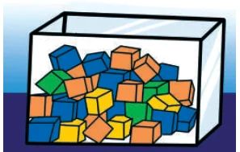
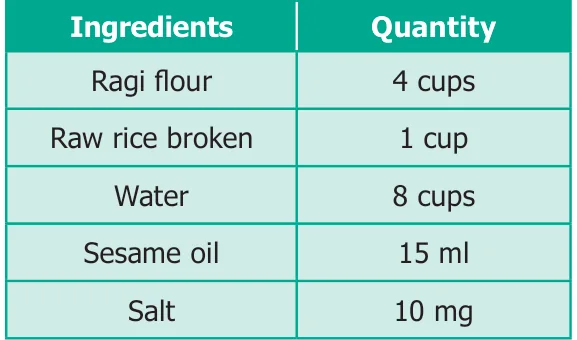

Miscellaneous Practice Problems
- The maximum speed of some of the animals are given below :
the Elephant \(= 20\) km/h; the Lion \(= 80\) km/h; the Cheetah \(= 100\) km/h
Find the following ratios of their speeds in simplified form and find which ratio is the least?.- the Elephant and the Lion
- the Lion and the Cheetah
- the Elephant and the Cheetah
- A particular high school has 1500 students 50 teachers and 5 administrators. If the school grows to 1800 students and the ratios are maintained, then find the number of teachers and administrators.
- I have a box which has 3 green, 9 blue, 4 yellow, 8 orange coloured cubes in it.

- What is the ratio of orange to yellow cubes?
- What is the ratio of green to blue cubes?
- How many different ratios can be formed, when you compare each colour to anyone of the other colours?
- A gets double of what B gets and B gets double of what C gets. Find A : B and B : C and verify whether the result is in proportion or not.
- The ingredients required for the preparation of Ragi Kali, a healthy dish of Tamilnadu is given below.

- If one cup of ragi flour is used then, what would be the amount of raw rice required?
- If 16 cups of water is used, then how much of ragi flour should be used?
- Which of these ingredients cannot be expressed as a ratio? Why?